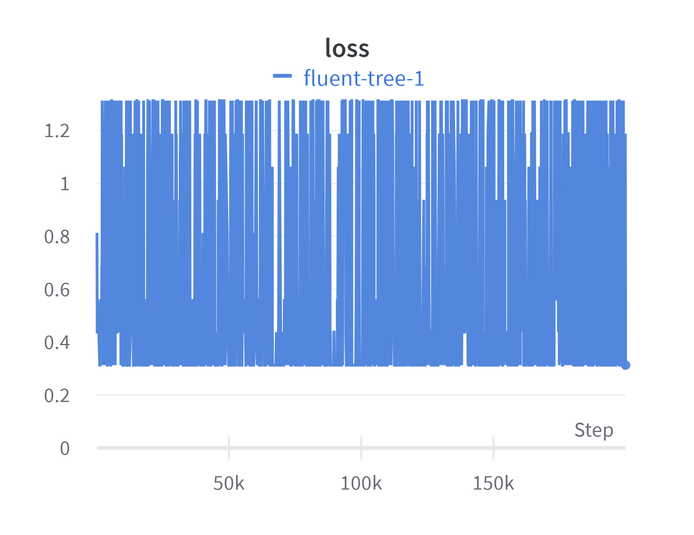

Introduction
Welcome to PinniWatch, your ultimate solution for identifying and distinguishing seals and sea lions in marine environments. PinniWatch employs cutting-edge artificial intelligence technology, specifically harnessing the formidable AlexNet deep neural network architecture to ensure accurate and reliable marine life identification.
Dataset
At the heart of PinniWatch's effectiveness is a meticulously curated dataset comprising 100 images. This dataset is thoughtfully composed to represent the marine ecosystem comprehensively. It encompasses 50 images depicting charismatic seals and sea lions, providing the system with the key features and traits that define these marine mammals. The remaining 50 images offer a contrast, showcasing the vastness of the ocean and the diverse marine wildlife that coexists in these ecosystems.
DataDeck
Explore the dataset presentation:
How PinniWatch Works
1.Data Preprocessing: PinniWatch places a strong emphasis on data preprocessing. Before feeding the images into the neural network, they undergo a series of transformations. These transformations include resizing images, normalizing color channels, and augmentation techniques to enhance the network's ability to learn from the data.
2.Feature Extraction: The convolutional layers within the AlexNet architecture act as feature extractors. They meticulously analyze the images, recognizing key elements like flippers, whiskers, and distinctive markings that distinguish seals and sea lions from their marine counterparts.
3.Classification: Following feature extraction, the fully connected layers in AlexNet perform the classification task. PinniWatch assigns a label to each image, categorizing it as either a seal or sea lion or a different marine species.
4.Prediction: PinniWatch doesn't stop at classification; it provides real-time predictions. This means you can use the system to swiftly and accurately identify these marine mammals in any given marine environment.
Use Cases
Here's how PinniWatch can help address important issues:
1. Wildlife Conservation
Issue: Monitoring and protecting seal and sea lion populations are essential for wildlife conservation.
Solution: PinniWatch assists conservationists in tracking and assessing the health of these species, contributing to their long-term survival.

2. Fisheries Management
Issue: Seals and sea lions can pose challenges for fishermen due to bycatch and competition for fish.
Solution: PinniWatch helps fishermen and fisheries managers in identifying and managing the presence of marine mammals to reduce conflicts and minimize bycatch.
3. Environmental Impact Assessment
Issue: Human activities in marine ecosystems can have a significant impact on seal and sea lion habitats.
Solution: PinniWatch aids in assessing the environmental impact of activities like offshore wind farms, oil drilling, and shipping routes.
4. Responsible Tourism
Issue: Tourists often seek opportunities to view seals and sea lions, but it's crucial to do so responsibly.
Solution: PinniWatch guides tour operators and enthusiasts to locate and view these animals in an ethical and sustainable manner.
5. Marine Research
Issue: Scientists need accurate data on seal and sea lion behavior and migration for research purposes.
Solution: PinniWatch provides data for in-depth marine research, including behavior analysis and tracking.
6. Oil Spill Response
Issue: In the event of an oil spill, rapid response is critical for protecting marine life.
Solution: PinniWatch aids in locating and monitoring seals and sea lions, enabling timely response and rescue efforts.

7. Aquaculture Protection
Issue: Aquaculture operations are vulnerable to seal and sea lion predation.
Solution: PinniWatch alerts fish farm operators to the presence of these animals, helping protect aquaculture businesses.
8. Climate Change Research
Issue: Understanding the impact of climate change on marine ecosystems is vital.
Solution: PinniWatch contributes by monitoring seal and sea lion distribution in changing ocean conditions.
9. Educational Initiatives
Issue: Public awareness and education about seals and sea lions are essential for their conservation.
Solution: PinniWatch can be used for educational outreach, providing real-time information and resources.

AlexNet
PinniWatch's engine is built upon the renowned AlexNet architecture, a revolutionary convolutional neural network (CNN) that broke new ground in the field of computer vision. Developed by Krizhevsky et al. in 2012, AlexNet achieved a significant leap in image recognition accuracy, sparking a new era of deep learning. The AlexNet architecture boasts a complex yet powerful design, comprising multiple convolutional layers, pooling layers, and fully connected layers. This intricate structure empowers PinniWatch to dissect the input images, extracting intricate features such as shapes, textures, and patterns that are characteristic of seals and sea lions.
Results
Your results content goes here...
Accuracy: 87.5%
Loss: 0.313
Conclusion
PinniWatch, empowered by the robust AlexNet architecture, is your reliable partner for identifying seals and sea lions in diverse marine settings...
About Us
PinniWatch is committed to addressing these critical issues through advanced AI technology. Our mission is to contribute to the conservation and understanding of these fascinating marine mammals...
For more information, please visit our [website](https://github.com/CourtneyBrookes/PinniWatch)
*Empower your marine conservation efforts with PinniWatch!* 🌊🌟